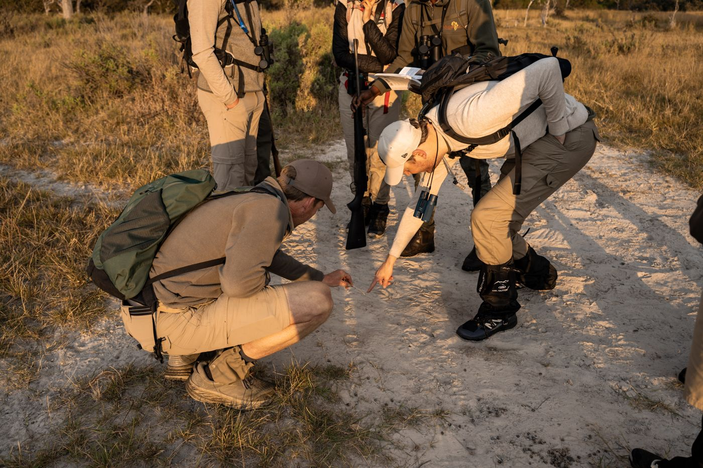
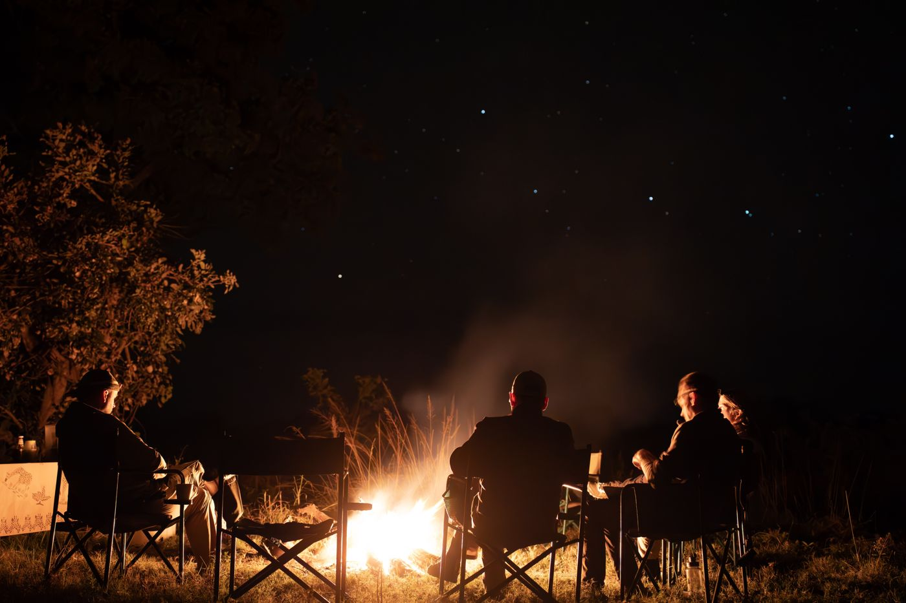
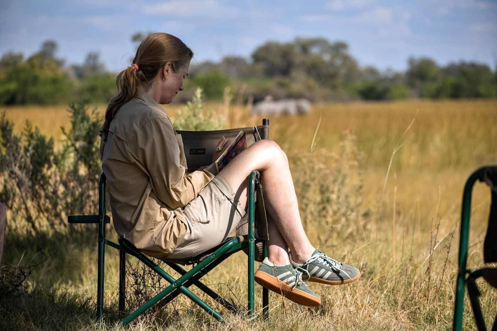
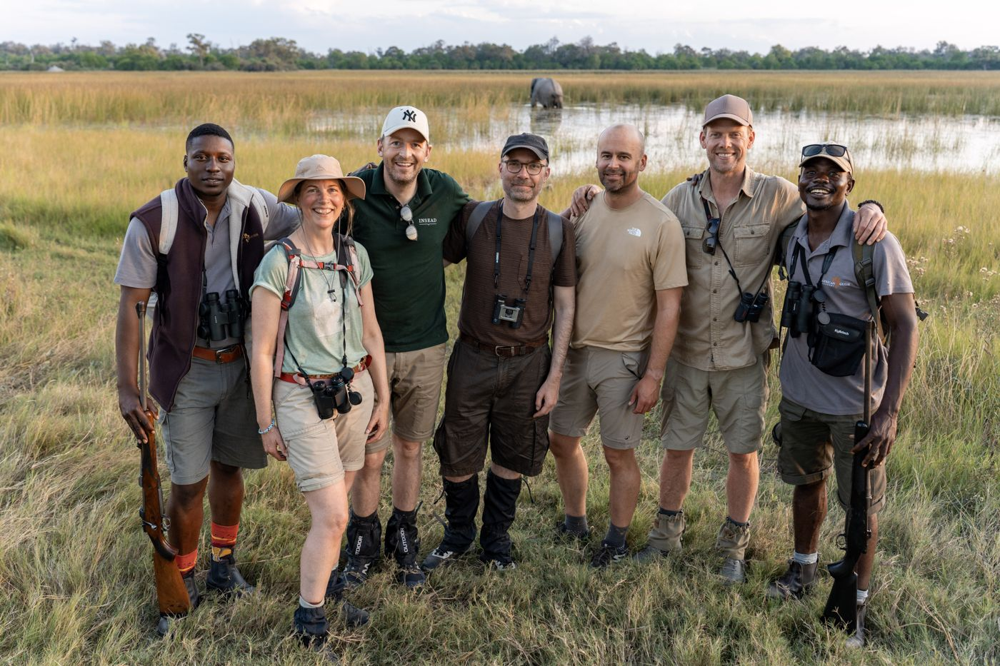
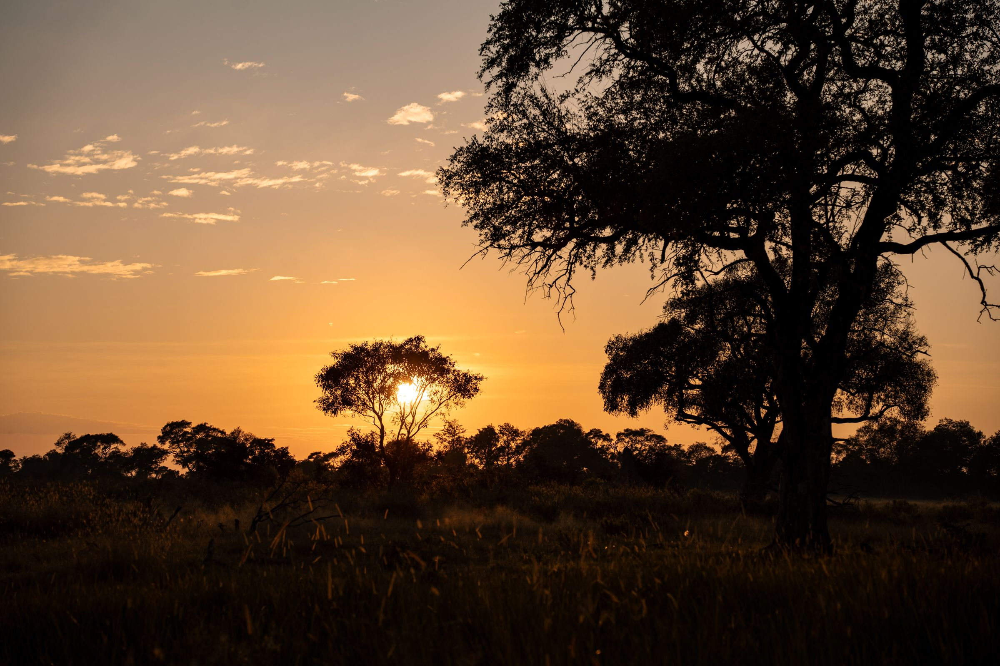
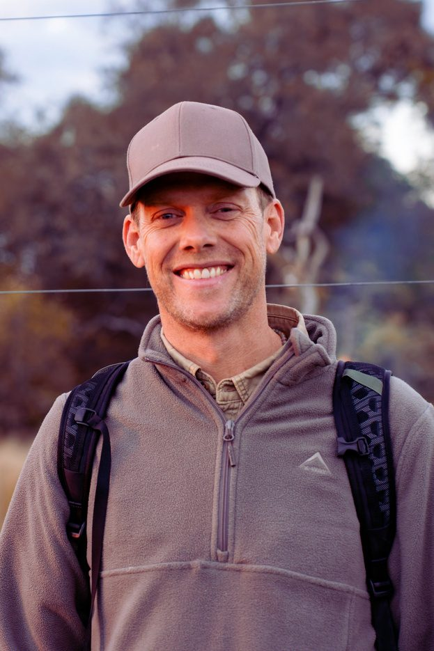
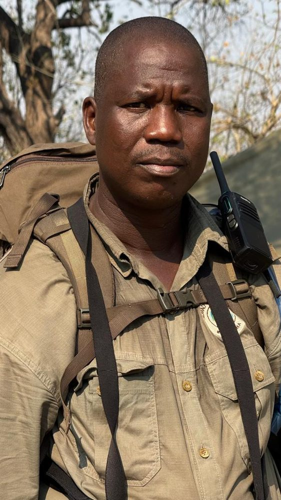
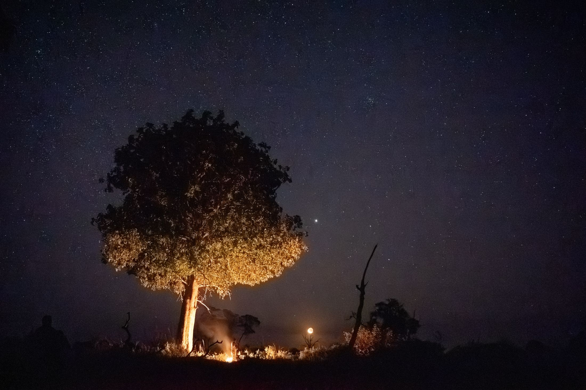

Track wilde dieren te voet
Verken de Okavango Delta, UNESCO Werelderfgoed, te voet met een zeer ervaren lokale gids en track olifanten, leeuwen en luipaarden bij zonsopkomst en zonsondergang.
IS DIT IETS VOOR JOU?
Soms vraagt het leven om even stil te staan. In de wildernis, ver van alle ruis, voel je weer wat je drijft, zie je je volgende stap helder en vind je de moed om die te zetten. Wat je ook hierheen brengt, de wildernis ontmoet je zoals je bent.
DE TRAIL
Een week zonder e-mail, agenda of bereik. De ruis in je hoofd verdwijnt, en wat er echt toe doet, kun je niet langer negeren.

Verken de Okavango Delta, UNESCO Werelderfgoed, te voet met een zeer ervaren lokale gids en track olifanten, leeuwen en luipaarden bij zonsopkomst en zonsondergang.

Laat het tempo van alledag achter je. Beweeg mee met het ritme van de natuur, slaap in kleine tentjes onder de sterren en kijk met een nieuw perspectief naar je leven.

Begeleide reflectie, lichaamswerk en tijd voor jezelf helpen je zien wat er mag worden losgelaten en waar je naartoe wilt bewegen.

Een groep van maximaal acht deelnemers: klein genoeg voor diepe verbinding rond het kampvuur, met ruimte voor jezelf wanneer je dat nodig hebt.

NA DE TRAIL
Helderheid over wat er voor jou écht toe doet, en over je volgende stap.
Een bewuste keuze over wat je loslaat.
Nieuwe energie, het gevoel weer écht te leven, en de rust om te vertragen.
Diepe verbinding met de natuur, met anderen en met jezelf.
WAT DEELNEMERS ZEGGEN
9,4
Gemiddelde score van de deelnemers aan de trail van mei 2026, op een schaal van 10.
IMPRESSIES
Klik op een foto om te vergroten
PROGRAMMA
Land in de warme, droge lucht van Maun, ontmoet de groep en ga direct de bush in, naar ons eerste kamp.
Sta op bij zonsopgang om te voet wilde dieren te tracken terwijl het land opwarmt, en trek er in de golden hours opnieuw op uit. Daartussen: begeleide reflectie en lichaamswerk in de schaduw, en nachten onder de sterren in kleine tentjes, soms met het gebrul van leeuwen in de verte.
Nog één wandeling in de vroege ochtend, dan terug naar Maun voor een afsluitende ceremonie om te eren wat je mee naar huis neemt.
Vlieg naar huis met heldere voornemens en de stilte van de bush nog in je, gevolgd door een 1-op-1 integratiesessie en een groepsreünie.
Vóór de trail: een 1-op-1 intakegesprek en een groepscall om je mededeelnemers te leren kennen.
JE GIDSEN

FACILITATOR & NATUURGIDS
Voormalig strategieconsultant bij McKinsey, lifecoach, ademcoach en geaccrediteerde (FGASA) natuurgids. Rick combineert een achtergrond in strategie en leiderschap met een diepe liefde voor Afrika, avontuur en persoonlijke groei, vanuit één overtuiging: je kunt anderen pas echt leiden als je bereid bent jezelf te leiden.

HOOFDNATUURGIDS
Sevara is geboren in een afgelegen dorp in de Okavango Delta en brengt meer dan 20 jaar ervaring als gids en uitzonderlijke tracking skills mee. Volledig geaccrediteerd en een ervaren mentor voor toekomstige natuurgidsen: hij kent de Delta van binnenuit.
INVESTERING
Ter plaatse is alles geregeld, van het vliegveld in Maun tot weer terug. Betalen in termijnen is mogelijk, en als de investering een drempel is: laten we erover praten.
18–26 APRIL 2027
Early bird tot 31 dec 2026
€4.250
excl. btw · €4.750 vanaf 1 januari 2027
Weet je het al? Reserveer je plek met een aanbetaling
VRAGEN
Alles wat je wilt weten voordat je ja zegt. Nog een andere vraag? Daar is het kennismakingsgesprek voor.
Deelnemers hebben heel verschillende achtergronden: leiders, ondernemers, professionals en creatieven. Sommigen zitten midden in een transitie in hun carrière of persoonlijke leven. Anderen voelen simpelweg de behoefte om even afstand te nemen van de drukte en weer contact te maken met wat er echt toe doet. Wat iedereen verbindt, is een verlangen naar groei, helderheid, avontuur en echte verbinding.
Je moet makkelijk 5 tot 10 kilometer per dag kunnen lopen en tegen warme temperaturen kunnen. Een basisconditie helpt je om volop van de trail te genieten.
Een balans tussen comfort en avontuur: geen luxe safarilodge, maar ook geen expeditie waarin je alles zelf draagt. In Kaziikini Camp slaap je in comfortabele safaritenten met echte bedden. Dieper in de bush slaap je in kleinere tentjes op een slaapmatje, dichter bij de natuur. Je bagage wordt voor je vervoerd, dus je hoeft geen zware rugzak te dragen, en een kok bereidt de hele week voedzame maaltijden.
Reserveer je plek met een aanbetaling van €750 bij boeking.
Een reis- en medische verzekering is verplicht. Betalen in termijnen is mogelijk op aanvraag. Zie de algemene voorwaarden voor een volledig overzicht.
Plan een kennismakingsgesprek. Als het klikt, vul je het aanmeldformulier in en doe je de aanbetaling, waarna je een bevestigingsmail ontvangt met alle informatie. Daarna nodigen we je uit voor een 1-op-1 intakegesprek met Rick om je intentie te verkennen, ontvang je een welkomstgids en word je toegevoegd aan een WhatsApp-groep met je mededeelnemers.
De trail is in het Engels, tenzij alle deelnemers Nederlands spreken; dan is hij grotendeels in het Nederlands.
Het programma is zorgvuldig opgezet, maar laat ruimte voor spontaniteit en het ritme van de natuur; we passen ons aan het weer, de dieren en de energie van de groep aan. We moedigen je aan om overal aan mee te doen, omdat elk onderdeel bijdraagt aan het geheel, maar alles is vrijwillig en we vertrouwen erop dat je je eigen tempo bewaakt.
Je wordt begeleid door onze ervaren natuurgids Sevara, ondersteund door het team van NGS (Nomad Guide School) en Rick. Er is altijd iemand in de buurt om te helpen.
Er worden verse, gezonde maaltijden bereid. Heb je dieetwensen? Geef ze door tijdens je intake, dan houden we er rekening mee. De trail is alcoholvrij, zodat er ruimte is voor helderheid, presence en verbinding.
Tijdens de trail is er geen wifi en maar beperkt bereik, zodat je echt kunt loskomen van thuis. Op de eerste en laatste dag heb je bereik en wifi in Maun. Voor de veiligheid hebben we altijd een satellietapparaat bij ons voor noodcommunicatie.
Van buiten Afrika vlieg je het best via Johannesburg of Kaapstad naar Maun. Kom uiterlijk zondag 18 april om 14:00 aan in Maun en plan je vertrek niet eerder dan maandag 26 april om 13:00; we vragen iedereen om het volledige programma mee te doen. Boek je vlucht pas als de trail bevestigd is: we laten het je weten zodra het minimum aantal deelnemers is bereikt.
De trail gaat door bij minimaal 4 deelnemers. Zijn er minder dan 4 aanmeldingen, dan kan de trail worden geannuleerd of uitgesteld; dat laten we je minstens 45 dagen van tevoren weten. De deelnamekosten worden dan volledig terugbetaald; voor vliegkosten zijn we niet aansprakelijk.
Ja. Als de trail bijdraagt aan je professionele of leiderschapsontwikkeling, kunnen we op naam van je bedrijf factureren. Mail je bedrijfsgegevens naar hello@discoveryourwildself.com.

Plan een vrijblijvend kennismakingsgesprek van 30 minuten met Rick. We bespreken waar je nu staat, waar je naar op zoek bent en of deze trail bij je past.
Of bel Rick direct: +31 6 5883 7096